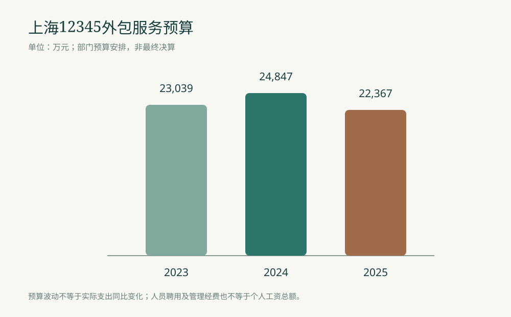

01｜执行摘要：12345 不是简单的客服外包
12345 是把群众诉求转化为行政工单、再由政府部门或公共服务单位办理的治理系统。外包通常集中在话务接听、平台运维、技术支持和后台辅助环节；诉求办理、行政判断、监管执法和公共责任仍应由有法定职责的单位承担。
- 2021年国务院办公厅文件明确，12345负责受理诉求和回答一般咨询，不代替部门职能。[S1]
- 上海2023—2025年市级预算分别为2.3039亿、2.4847亿和2.2367亿元。[S2][S3][S4]
- 上海人员聘用及管理经费占比较高，但不能当作个人工资总额。
- 上海474个席位不等于474名员工。[S5]
- 北京、深圳公开了千万级业务量，但城市口径不同。[S6][S7]
- 2025年国务院意见明确：可外包话务和信息化运维等辅助业务，但不得将诉求办理等主体业务外包。[S8]
02｜组织结构：一个入口，不等于一个责任主体
2021年国务院办公厅文件要求各地归并热线，统一为12345，提供7×24小时人工服务；同时明确热线负责受理企业和群众诉求、回答一般咨询，不代替部门职能，相关部门按职责办理业务、实施监管执法和应急处置。[S1]
- 群众通过电话、网站、APP、微信等渠道提交诉求。
- 话务人员识别事项、记录信息、解释常见政策或生成工单。
- 热线管理机构依据事项分类目录派单或转接。
- 政府部门、街镇、国有企事业单位调查和办理。
- 承办单位反馈结果，热线平台跟踪、回访和督办。
- 疑难复杂、跨部门或重复诉求进行会商、升级或提级办理。
外包企业可能参与接听、记录、回访和技术支持，但不因此自动取得行政职权和最终责任。
03｜上海：2亿元级预算的真实构成
| 年度 | 外包服务预算 | 人员聘用及管理 |
|---|---|---|
| 2023 | 23,039万元 | 18,043万元 |
| 2024 | 24,847万元 | 18,063万元 |
| 2025 | 22,367万元 | 16,127.01万元 |
2023年到2024年预算增加约7.9%；2025年较2024年下降约10.0%。预算规模会随业务、系统和服务安排变化，不能把某一年的2.3亿或2.5亿当成固定的年度实际支出。[S2][S3][S4]
人员经费占比
2023年人员聘用及管理经费18,043万元，占总预算约78.3%；2025年对应预算16,127.01万元，占约72.1%。[S2][S4] 这说明热线运营明显劳动密集，但该科目可能包含招聘、培训、人员管理、班次保障、社会保险和其他用工成本，不能直接当作话务员工资总额。

474个席位不等于474名员工
上海虹口区财政绩效评价文件披露，2023年热线外包服务标准包括呼叫中心场地和474个席位、同等规模系统平台，以及满足7×24小时服务的运行保障。[S5]
席位是工位或系统容量；在岗人数受排班、休假、培训、后台质检和人员流动影响；全职当量还需要按实际工时折算。不能把474个席位误写成474名员工，也不能仅凭席位数推算真实人数。
能否算出话务员到手工资？
目前公开预算材料没有完整披露上海市级热线项目的个人工资表、人员数量、社保结构、供应商管理费和分包情况。因此不能严谨地给出话务员月薪到手多少或外包公司净赚多少。能确认的是人员管理预算和席位容量；不能确认的是实际在岗人数、工资、管理费、供应商利润率和全年实际启用工时。
04｜北京与深圳：业务量、预算和绩效
北京：受理量与解决率
北京市2025年度报告显示，12345全年受理市民诉求2,580.2万件，同比上升6.6%；解决率97.3%，满意率97.7%。电话渠道受理2,297.4万件，占89.0%；网络渠道282.8万件；诉求派单938.8万件，直接答复1,641.4万件。[S6]
2024年北京受理2,419.5万件，解决率96.7%，满意率97.0%。公开报道曾提及1,710多名话务员，但这不等于政府编制人数，也不能直接与上海474个席位比较。
深圳：预算执行与工单量
深圳市政务服务数据管理局2023年度绩效材料显示，热线管理项目全年预算9,715.33万元、执行9,450.38万元，预算执行率97.3%；全年总服务量3,715.28万次、工单量1,214.66万件、总办结率99.4%、按时办结率98%、平均办理时长5.1个工作日、市民整体满意率99.5%。[S7]
总服务量是服务次数，不等于独立诉求数量；工单量是形成工单的件数；办结率和满意率也不能互相替代。
| 城市 | 年份 | 公开数据 | 不能直接推出 |
|---|---|---|---|
| 上海 | 2023 | 预算2.3039亿元；474席 | 实际员工数、工资、最终支出 |
| 上海 | 2025 | 预算2.2367亿元；人员管理1.6127亿元 | 个人工资和供应商利润 |
| 北京 | 2025 | 受理2,580.2万件；解决率97.3% | 外包成本和人均工资 |
| 深圳 | 2023 | 预算9,715.33万元；执行9,450.38万元 | 与北京上海直接比较单位成本 |
05｜全国外包比例：可以说明趋势，不能代表所有城市
《全国政务热线发展研究报告（2025）》于2026年发布，研究设计包括22,778份群众问卷、172个样本城市热线单位问卷、112家实地调研和10,260例服务质量监测。[S9]
中国新闻周刊对报告的报道指出，在172个样本城市中，83%采用服务外包运营模式；政务热线公务员及事业编人员整体占比约9.66%，65%的样本城市在岗公务员及事业编人数不足10人。[S10] 这说明外包在样本城市中普遍，但不能无条件外推为全国所有城市的精确比例。
06｜2025年新规：辅助业务可外包，主体业务不得外包
2025年6月29日，国务院办公厅发布国办函〔2025〕66号，明确在保障数据安全和服务质量的前提下，可依法依规通过政府购买服务委托第三方开展话务服务、信息化运维等辅助性业务，但不得将诉求办理等主体业务外包。[S8]
- 外包企业可提供接听、系统维护、知识库技术支持等辅助服务。
- 热线管理机构负责规则、流程、监督、数据治理和第三方管理。
- 相关职能部门仍应依法履行职责，不能把行政判断和诉求实质办理整体交给承包商。
- 不能用外包合同把政府公共责任完全转移给企业。
07｜绩效考核：接通率高不等于问题解决好
- 接通指标：接通率、平均等待时间、放弃率。
- 受理指标：记录完整率、分类准确率、知识库命中率。
- 办理指标：按时办结率、一次解决率、重复工单率。
- 结果指标：实际问题解决率、群众满意度、复发率和同类问题下降情况。
若绩效过度依赖接通速度，可能压缩复杂诉求的沟通时间；若只考核办结率，可能鼓励形式化答复或不恰当退单；若只看满意率，可能出现迎合式解释或过度回访。
中国新闻周刊2026年对话务员和承办单位的调查报道，描述了重复诉求、剔除工单、超出热线权限的诉求被反复转派等问题。这是调查报道和个案线索，不能代表所有城市，但提示了指标与真实解决结果可能不一致的风险。[S10]
08｜政府采购合同应该如何设计？
- 服务范围：接听、记录、转接、回访、知识库、平台运维分别列项。
- 人员标准：岗位资格、培训、社保、排班、流动率和保密义务。
- 席位与工时：席位容量、实际启用时段、峰值并发和应急扩容。
- 价格结构：人工成本、管理费、系统维护、技术服务和税费分别列示。
- 数据治理：数据归属、访问权限、留存期限、脱敏、审计和泄露责任。
- 绩效指标：接通、准确记录、办理反馈、重复诉求和真实解决结果分层评价。
- 分包管理：禁止未经批准的层层转包，披露实际履约主体。
- 退出机制：合同终止时知识库、数据、系统接口和未结工单如何移交。
不要只按坐席数量乘单价采购，而应按服务能力、业务复杂度和真实结果设置可核验的成本与绩效标准。
09｜结论
12345的外包不是简单地把政府窗口交给企业，而是把一部分高频、标准化、技术密集的辅助工作交由专业机构执行。真正的治理问题在于，外包以后谁掌握规则、谁能派单、谁有权办理、谁承担行政责任、谁控制数据，以及绩效指标是否反映群众问题得到解决。
上海公开预算表明，市级热线外包是2亿元级经常性项目，人员聘用及管理经费占比较高；北京和深圳公开数据说明热线承担千万级诉求量，但城市间指标口径不同。现有公开资料不足以可靠计算上海话务员实际人数、到手工资和供应商净利润。
最严谨的结论是：可以确认项目预算和部分运营容量，不能据此推断实际工资和企业利润；可以确认第三方承担辅助运营，不能据此认为诉求办理责任已经外包。
相关研究
- 中国劳务派遣：三方用工中的控制权、成本与责任：外包用工的法律边界。
- 干部任用与组织激励：公开行政信息和组织责任链。
参考来源
- 国务院办公厅，《关于进一步优化地方政务服务便民热线的指导意见》，国办发〔2020〕53号。原文
- 上海市2023年市级部门预算。预算PDF
- 上海市2024年市级部门预算。预算PDF
- 上海市2025年市级部门预算。预算PDF
- 上海市虹口区财政支出绩效评价，2023年12345外包服务标准。绩效评价PDF
- 北京市政务服务和数据管理局，《2025年12345热线年度数据分析报告》，2026-05-06。年度数据
- 深圳市政务服务数据管理局，2023年度部门绩效自评。绩效材料
- 国务院办公厅，《关于进一步规范和提升12345热线服务的意见》，国办函〔2025〕66号，2025-06-29。政策原文
- 《全国政务热线发展研究报告（2025）》方法介绍，2026-04-27。报告介绍
- 中国新闻周刊，《能坚持做满两个月，已经算是老员工》，2026-09-14。调查报道